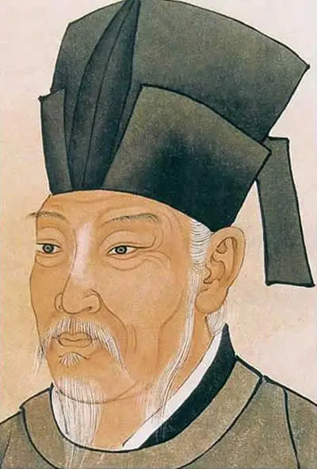

白居易（772年2月28日—846年9月8日），字乐天，号香山居士、醉吟先生，华州下邽（今陕西渭南东北）人。祖籍太原阳邑（今山西太谷），一说祖籍同州韩城（今陕西韩城），生于河南新郑。 白居易留下了近百万字的作品，其中诗歌约3000首，其数量在唐代诗人中首屈一指。他从理论和创作实践中倡导新乐府运动，继承了诗歌的“比兴”美刺”的传统，强调诗歌的现实内容和作用。白居易的诗歌题材广泛，语言平易通俗，富有情味。

孤山寺北贾亭西，水面初平云脚低。
几处早莺争暖树，谁家新燕啄春泥。
乱花渐欲迷人眼，浅草才能没马蹄。
最爱湖东行不足，绿杨阴里白沙堤。
田家少闲月，五月人倍忙。夜来南风起，小麦覆陇黄。
妇姑荷箪食，童稚携壶浆，相随饷田去，丁壮在南冈。
足蒸暑土气，背灼炎天光，力尽不知热，但惜夏日长。
复有贫妇人，抱子在其旁，右手秉遗穗，左臂悬敝筐。
听其相顾言，闻者为悲伤。家田输税尽，拾此充饥肠。
今我何功德，曾不事农桑。吏禄三百石，岁晏有余粮。
念此私自愧，尽日不能忘。
汉皇重色思倾国，御宇多年求不得。杨家有女初长成，养在深闺人未识。 天生丽质难自弃，一朝选在君王侧。回眸一笑百媚生，六宫粉黛无颜色。 春寒赐浴华清池，温泉水滑洗凝脂。侍儿扶起娇无力，始是新承恩泽时。 云鬓花颜金步摇，芙蓉帐暖度春宵。春宵苦短日高起，从此君王不早朝。 承欢侍宴无闲暇，春从春游夜专夜。后宫佳丽三千人，三千宠爱在一身。 金屋妆成娇侍夜，玉楼宴罢醉和春。姊妹弟兄皆列土，可怜光彩生门户。 遂令天下父母心，不重生男重生女。骊宫高处入青云，仙乐风飘处处闻。 缓歌慢舞凝丝竹，尽日君王看不足。
渔阳鼙鼓动地来，惊破霓裳羽衣曲。九重城阙烟尘生，千乘万骑西南行。 翠华摇摇行复止，西出都门百余里。六军不发无奈何，宛转蛾眉马前死。 花钿委地无人收，翠翘金雀玉搔头。君王掩面救不得，回看血泪相和流。
黄埃散漫风萧索，云栈萦纡登剑阁。峨嵋山下少人行，旌旗无光日色薄。 蜀江水碧蜀山青，圣主朝朝暮暮情。行宫见月伤心色，夜雨闻铃肠断声。 天旋地转回龙驭，到此踌躇不能去。马嵬坡下泥土中，不见玉颜空死处。 君臣相顾尽沾衣，东望都门信马归。归来池苑皆依旧，太液芙蓉未央柳。 芙蓉如面柳如眉，对此如何不泪垂？春风桃李花开日，秋雨梧桐叶落时。 西宫南内多秋草，落叶满阶红不扫。梨园弟子白发新，椒房阿监青娥老。 夕殿萤飞思悄然，孤灯挑尽未成眠。迟迟钟鼓初长夜，耿耿星河欲曙天。 鸳鸯瓦冷霜华重，翡翠衾寒谁与共？悠悠生死别经年，魂魄不曾来入梦。
临邛道士鸿都客，能以精诚致魂魄。为感君王辗转思，遂教方士殷勤觅。 排空驭气奔如电，升天入地求之遍。上穷碧落下黄泉，两处茫茫皆不见。 忽闻海上有仙山，山在虚无缥缈间。楼阁玲珑五云起，其中绰约多仙子。 中有一人字太真，雪肤花貌参差是。金阙西厢叩玉扃，转教小玉报双成。 闻道汉家天子使，九华帐里梦魂惊揽衣推枕起徘徊，珠箔银屏迤逦开。 云鬓半偏新睡觉，花冠不整下堂来。风吹仙袂飘飖举，犹似霓裳羽衣舞。 玉容寂寞泪阑干，梨花一枝春带雨。含情凝睇谢君王，一别音容两渺茫。 昭阳殿里恩爱绝，蓬莱宫中日月长。回头下望人寰处，不见长安见尘雾。 惟将旧物表深情，钿合金钗寄将去。钗留一股合一扇，钗擘黄金合分钿。 但教心似金钿坚，天上人间会相见。
临别殷勤重寄词，词中有誓两心知。七月七日长生殿，夜半无人私语时。 在天愿作比翼鸟，在地愿为连理枝。天长地久有时尽，此恨绵绵无绝期。
© 版权所有 someone@263.net